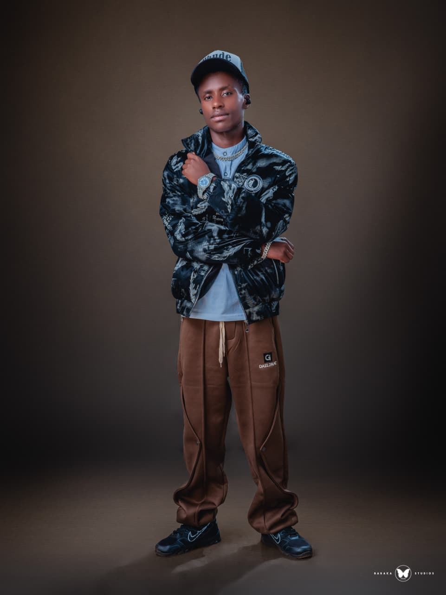

My name is Davies Kaisa. I am pursuing a Bachelor of Information Technology at Kisii University.
I am interested in full-stack web development and enjoy creating functional and user-friendly web applications.
My background is in Information Technology, where I am developing my knowledge and practical skills in programming, web development and information systems.
After completing my course, I hope to become a professional full-stack web developer and use technology to develop useful solutions to real-world problems.